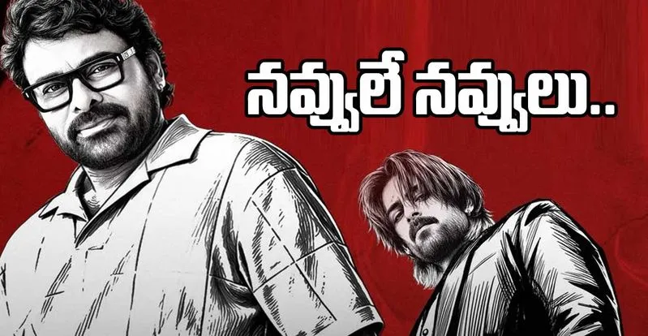

🔥 “కంటెంట్ ఉంటే ఆడియన్స్ థియేటర్లకు వస్తారు”.. చిరంజీవి కీలక వ్యాఖ్యలు!

[0:00 - 0:45] మినిట్ 1: ఇంట్రో
(విజువల్: మెగాస్టార్ చిరంజీవి ఈవెంట్ విజువల్స్, భారీ సెట్స్ మరియు థియేటర్ల రష్ దృశ్యాలు)
వాయిస్ ఓవర్: సినిమా అంటే భారీ బడ్జెట్.. కోట్ల రూపాయల ఖర్చు.. భారీ సెట్స్.. స్టార్ హీరోలు మాత్రమే కాదు. సినిమాలో మంచి కంటెంట్ ఉంటే ప్రేక్షకులు తప్పకుండా థియేటర్లకు వస్తారు అని మెగాస్టార్ చిరంజీవి చేసిన వ్యాఖ్యలు ఇప్పుడు టాలీవుడ్లో ఆసక్తికరంగా మారాయి.
[0:45 - 1:45] మినిట్ 2: బడ్జెట్ వ్యూహం & భయం-భక్తి
(విజువల్: సినీ నిర్మాణ దృశ్యాలు మరియు బడ్జెట్ గ్రాఫిక్స్)
వాయిస్ ఓవర్: ప్రస్తుతం తెలుగు సినిమా ఇండస్ట్రీలో భారీ బడ్జెట్ సినిమాల ట్రెండ్ కొనసాగుతోంది. అయితే సినిమా విజయానికి కేవలం బడ్జెట్ మాత్రమే కారణం కాదని చిరంజీవి అభిప్రాయపడ్డారు. “నిర్మాణంలో దర్శకులకు భయం, భక్తి ఉండాలి. భారీగా ఖర్చు చేస్తేనే అది పెద్ద సినిమా కాదు. పరిమిత బడ్జెట్లో కూడా మంచి సినిమాలు తీయడం నేర్చుకోవాలి” అని ఆయన వ్యాఖ్యానించారు.

[1:45 - 3:00] మినిట్ 3: మారిన ప్రేక్షకుల అభిరుచి
(విజువల్: థియేటర్లు, చిన్న సినిమాల విజయాల పోస్టర్లు, OTT ప్లాట్ఫామ్స్ విజువల్స్)
వాయిస్ ఓవర్: ఒక సినిమా ఎంత భారీగా తెరకెక్కించినా కథ నచ్చకపోతే బాక్సాఫీస్ దగ్గర నిలబడటం కష్టమే. అదే సమయంలో చిన్న బడ్జెట్తో వచ్చిన సినిమాలు కూడా మంచి కథతో వస్తే భారీ విజయాలను అందుకుంటున్నాయి. ఓటీటీ ప్లాట్ఫామ్స్ అందుబాటులోకి వచ్చిన తర్వాత కంటెంట్ విషయంలో ప్రేక్షకుల అంచనాలు మరింత పెరిగాయి.

[3:00 - 4:00] మినిట్ 4: సినిమా నాణ్యత & ముగింపు
(విజువల్: టాలీవుడ్ సెకండాఫ్ రష్ మరియు చానెల్ లోగో)
వాయిస్ ఓవర్: ప్రస్తుతం సినిమాల సంఖ్య కంటే సినిమా నాణ్యత ముఖ్యమని సినీ ప్రముఖులు చెబుతున్నారు. చిరంజీవి చెప్పినట్టుగా కంటెంట్కు ప్రాధాన్యత ఇస్తూ పరిమిత బడ్జెట్లో మంచి సినిమాలు తీసే ప్రయత్నం ఎంతవరకు పెరుగుతుందో చూడాలి. మీ అభిప్రాయం ఏంటి? భారీ బడ్జెట్ సినిమా కావాలా.. లేక మంచి కంటెంట్ ఉన్న సినిమా కావాలా? కామెంట్లో చెప్పండి!
← హోమ్ పేజీకి వెళ్లండి